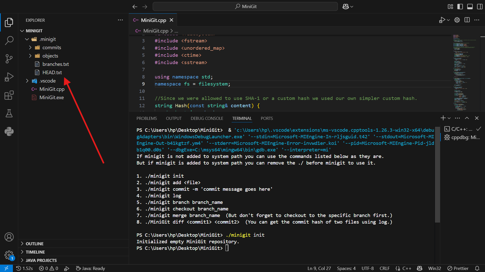
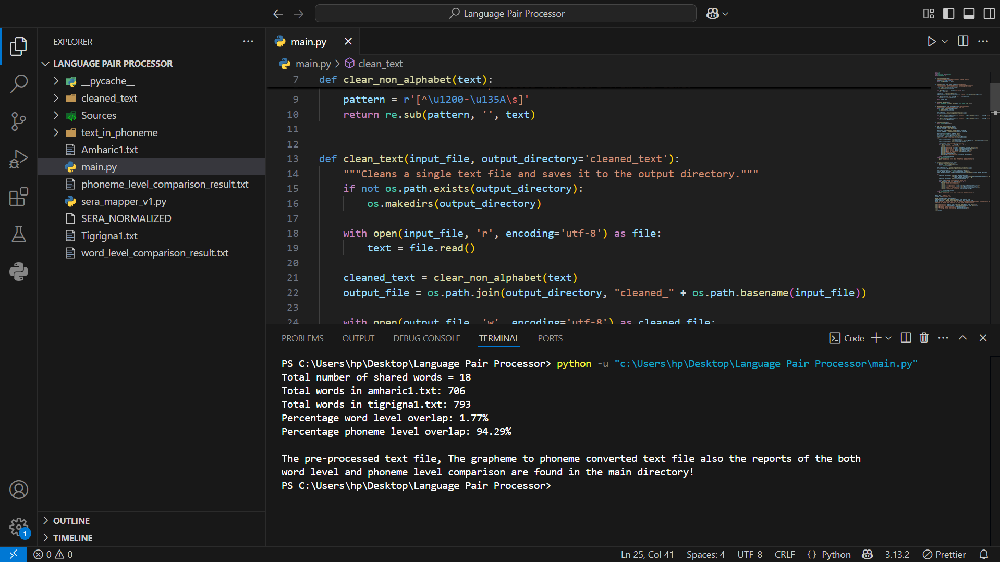

MiniGit

Overview:
It's a simplified Git-like version control system built in C++. It allows users to track versions of files, make commits, manage branches, perform merges, and compare commits. All via command-line interaction and local file system operations.
Technology Stack:
- Language: C++
- CLI
- Hashing: Custom hash function
- Persistence: Store commit metadata and file blobs in local file system
Features:
- init - Initialize a MiniGit repository
- add "filename" - Stage a file for commit
- commit -m "message" - Save staged changes with a message
- log - View commit history
- branch "branchname" - Create a new branch
- checkout "branch/commit" - Switch to another branch or commit
- merge "branch" - Merge a branch into the current branch
- diff "commit1" "commit2" - Show differences between two commits
Development:
It was developed as a group project in Addis Ababa University to help better understand how real-world systems (like Git) are underpinned by DSA principles such as hashing, trees, DAGs, and file diffing.
Lessons Learned:
- Designed and implemented complex data structures (e.g., DAGs, trees).
- Understood how Git works under the hood.
- Command-line interface development.
- Experience software engineering practices like versioning, diffing, and merges.
Language Pair Processor

Overview:
This project explores the linguistic similarities between Amharic and Tigrigna by analyzing word-level and phoneme overlap between the two languages. It uses Python programming and phoneme conversion tools like sera, the study quantifies the degree of overlap, providing insights into the structural and phonetic relationships between these closely related Semitic languages.
Technology Stack:
- Language: Python
- Regular Expressions
- CLI
- SERA-based G2P conversion
- Persistence: Stores results in local file system.
Features:
- Data Preprocessing
- Phoneme Conversion
- Word-Level Comparison
- Phoneme-Level Comparison
- Reporting & Output
Development:
It was developed to quantify the degree of similarity between Amharic and Tigrigna by comparing word-level and phoneme overlaps. By using phoneme conversion algorithms the study provides a good explanation on the linguistic relationship between the two languages.
Lessons Learned:
- Linguistic Insight
- Practical Python Skills
- Data Analysis & Similarity Metrics
- Grapheme-to-Phoneme (G2P) Conversion